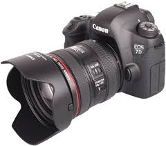
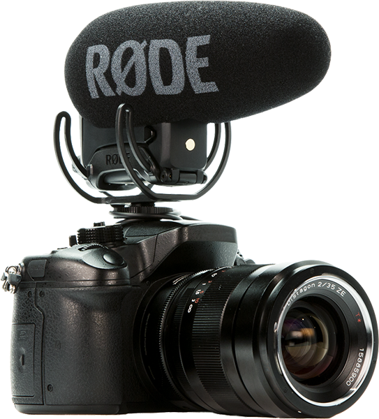
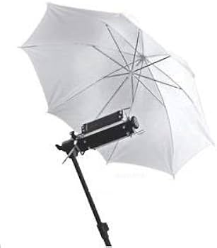

GOA Pictures
Welcome to GOA, where storytelling meets the art of
filmmaking! 🎬
At GOA, we believe that every story is a journey waiting
to be explored, and every frame is an opportunity to
capture the essence of emotion. We are not just a filmmaking
company; we are creators, dreamers, and visionaries
dedicated to bringing your narratives to life on the silver
screen.
- Canon 3D Camera:
Elevate your filmmaking with the
Canon 3D Camera. Cutting-edge technology
captures stunning visuals for a cinematic
experience.

- Rode Mic:
Enhance audio quality with the Rode
Mic. Designed for filmmakers, it
delivers crisp and clear sound,
capturing every detail of your scene.

- Reflective Umbrella:
Master lighting with the Reflective
Umbrella. Ideal for natural or artificial
light, it adds a professional touch by
diffusing and softening light.
